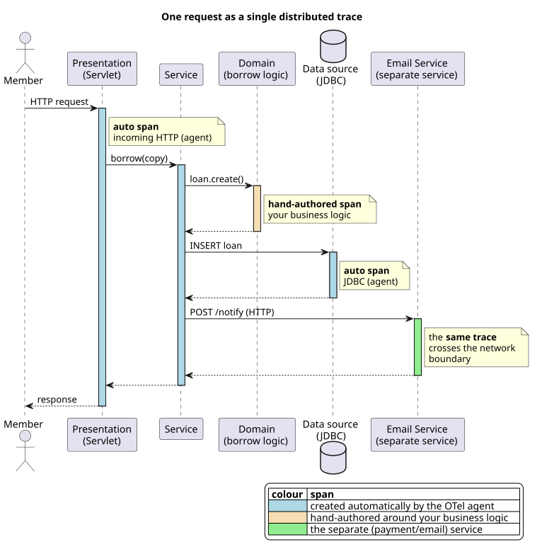

Workshop 7#
By Now You Should Have
Submitted Part 1B — a use case deployed end-to-end on Render, with your arc42/C4 Wiki started.
Begun Part 2 — the core patterns, and your integration of the provided Payment Service as a second deployable service.
Kept your CI/CD pipeline and Wiki current, and recorded your workshop minutes.
A running enterprise system is operated, not just deployed — teams rely on telemetry to understand what a live system is doing. In this project you instrument your application to emit the three pillars of observability using OpenTelemetry (OTel), the industry-standard, vendor-neutral instrumentation framework. You deliver basic instrumentation and one cross-layer trace in Part 2, and golden-signals dashboards in Part 3.
This isn’t a DevOps subject — the goal is that you can see your architecture running and reason about its behaviour, a skill you use directly in the Part 3 performance exercise.
The three pillars#
Pillar |
What it is |
Example in your app |
|---|---|---|
Metrics |
Aggregated numbers over time |
a counter of confirmed bookings; request latency |
Logs |
Timestamped event records |
“payment rejected for booking 42” |
Traces |
The path of a single request across components, as nested spans |
one Reserve-Seat request, end to end |
How you instrument it#
You don’t hand-write everything. OpenTelemetry gives you two complementary layers:
The OTel Java auto-instrumentation agent. Attached at JVM startup — no code changes — it automatically traces incoming HTTP requests and JDBC calls. You add it as a
-javaagentwhen you launch your fat JAR.A few hand-authored spans and metrics (2–4 is plenty) around your key business transactions — for example, a span around the ticket-price calculation in Reserve Seat, or a counter for confirmed bookings. Hand-authored instrumentation is what demonstrates you understand what the agent is doing on your behalf.
You then export your telemetry to an observability back-end where it can be queried and visualised — a free hosted tier such as Grafana Cloud is fine.
Starting the agent, and a hand-authored span
Attach the agent when you launch the app:
java -javaagent:opentelemetry-javaagent.jar \
-Dotel.service.name=ticketing-app \
-Dotel.exporter.otlp.endpoint=$OTEL_ENDPOINT \
-jar app.jar
Wrap a business transaction in your own span:
Tracer tracer = GlobalOpenTelemetry.getTracer("ticketing");
Span span = tracer.spanBuilder("reserve-seat.price-calculation").startSpan();
try (Scope scope = span.makeCurrent()) {
Money price = pricingRules.priceFor(seat); // your domain logic
span.setAttribute("seat.tier", seat.tier().name());
return price;
} finally {
span.end();
}
And a metric — a counter for confirmed bookings:
LongCounter confirmed = GlobalOpenTelemetry.getMeter("ticketing")
.counterBuilder("bookings.confirmed").build();
confirmed.add(1);
The distributed trace (the test of your layering)#
The concrete deliverable is a single request that produces one trace crossing your layers and the network boundary into the Payment Service. This is the real test of both your instrumentation and your layered architecture: if your layers are cleanly separated, the trace shows it.
Below, a “borrow” request in the library system (the same shape as your Reserve-Seat → Payment Service flow) becomes one trace. The agent creates the HTTP and JDBC spans; you hand-author the span around the domain logic; and the same trace continues across the network into the separate service.
{kind=link}

Fig. 2 One request, one trace — crossing presentation → service → domain → data source, and the network boundary into a separate service.#
In your project this is a Reserve Seat request whose trace crosses presentation → service → domain → data source and into the Payment Service’s POST /quote. The Payment Service we provide is already instrumented, so the trace crosses into it automatically once both services export to the same back-end. What’s assessed is your instrumentation on the main-application side — the hand-authored spans and your metrics/dashboards. The cross-boundary trace demonstrates your integration; your spans demonstrate your understanding.
Golden-signals dashboard (Part 3)#
For Part 3 you build a basic dashboard framing the health of your system in terms of the four golden signals. One panel per signal is enough.
Signal |
Question it answers |
|---|---|
Latency |
How long do requests take? |
Traffic |
How much demand is the system under? |
Errors |
What proportion of requests fail? |
Saturation |
How full is the system (CPU, connections, memory)? |
Not required: alerting rules, sampling strategies, SLOs/error budgets, or instrumenting every use case.
When each piece is due#
Deliverable |
Part 2 |
Part 3 |
|---|---|---|
Auto-agent + 2–4 hand-authored spans/metrics |
✅ |
keep current |
One distributed trace crossing your layers + Payment Service |
✅ |
— |
Golden-signals dashboards |
— |
✅ |
Telemetry used for performance analysis |
— |
✅ (see Workshop 8) |
Part 2 observability checklist#
The OTel Java agent is attached at startup and exporting to your back-end (e.g. Grafana Cloud).
2–4 hand-authored spans/metrics wrap your key business transactions.
A distributed trace for one Reserve-Seat request visibly crosses
presentation → service → domain → data sourceand into the Payment Service.A screenshot of that trace is in your Wiki (#8 Cross-cutting Concepts), with a brief description of your setup.